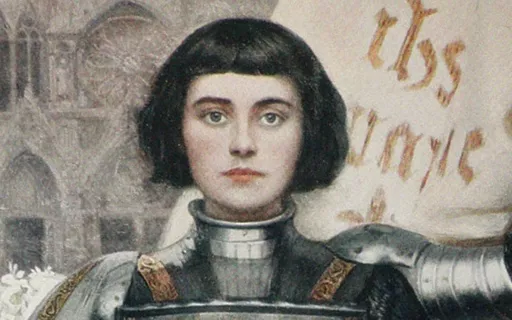
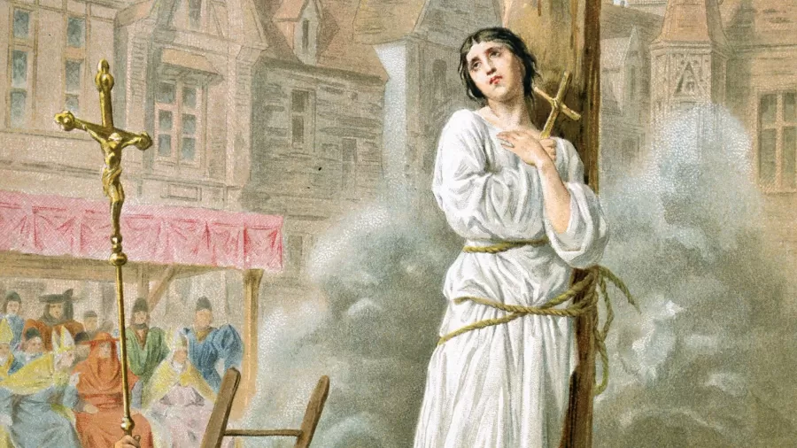

Joana d'Arc foi uma camponesa francesa que nasceu na aldeia Domrémy-la-Pucelle em 1412. Através das suas visões, ela visou liderar o exército francês na Guerra dos Cem Anos para ajudar o rei Carlos VII a chegar ao trono. Mais de 500 anos depois de sua morte, em 16 de maio de 1920, ela foi canonizada pelo Papa Bento XV.
Ao longo dos séculos, a figura de Joana d'Arc recebeu inúmeros adjetivos: bruxa, santa, herege, louca, mártir, feminista, líder militar e, claro, heroína. A história da camponesa que se transformou em mito é fascinante justamente por toda a controvérsia ao redor dela.
Joana d'Arc teria nascido em 1412, na aldeia Domrémy-la-Pucelle, no noroeste da França. Era filha caçula de uma família de camponeses e desde pequena frequentava a igreja.
Aos 13 anos, afirmou ter suas primeiras visões do arcanjo São Miguel, de Santa Catarina de Alexandria e de Santa Margarida de Antioquia, que teriam lhe apresentado a missão de liderar o exército francês contra o oponente da época.
Aqui, é preciso entender o contexto histórico em que Joana d'Arc vivia. Desde 1337, França e Inglaterra se enfrentavam na Guerra dos Cem Anos (1337-1453). Tratava-se de uma disputa por soberania sobre o território francês. A própria vila em que ela nasceu já tinha sido atacada por borguinhões (aliados dos ingleses).
O falecimento do rei Carlos IV, que não deixou herdeiros, abriu caminho para que o seu sobrinho, o rei inglês Eduardo III, reivindicasse os direitos de sucessão.
Então, aliada à religiosidade e às “vozes” que a motivaram, Joana assumiu que apenas uma França forte e soberana poderia derrotar os inimigos, além de ajudar o rei francês Carlos VII a chegar ao trono. Poucos anos depois, convenceu um funcionário local do reino francês a levá-la a uma audiência com Carlos VII.
Em 1429, Joana d'Arc entrou para a história da França ao escrever uma carta ao chefe da ocupação inglesa – o que derruba o mito dela ser analfabeta. Apesar de ter pouca educação formal, era capaz de ler e escrever, conforme comprovam cartas e documentos assinados por ela.
Foi nesse período que a jovem cortou os cabelos e passou a se vestir com trajes masculinos, com a suposta intenção de ganhar o respeito da população quanto às suas pretensões de ingressar no exército francês.
Nessa altura, ela já havia se tornado uma lenda, as pessoas queriam vê-la e tocá-la. Joana vestida de guerreiro injetou esperança na população. O povo via nela a concretização de um antiga profecia, segundo a qual a França seria salva por uma virgem.
No campo de batalha
Ela recebeu armas, vestimenta e autorização da corte para liderar uma tropa com mais de 7 mil soldados. Joana d'Arc foi fundamental para elevar o moral da tropa, que estava desgastada.
Existe um debate sobre a atuação dela nas batalhas. Segundo alguns historiadores, o papel de Joana seria mais tático e motivacional, e não lutando em campo de batalha. Apesar disso, ela foi fundamental para duas vitórias expressivas da França: em Orleans e em Reims.
A conquista da cidade de Reims, inclusive, permitiu a coroação de Carlos VII, em 17 de julho de 1429.
Os ingleses, derrotados, iniciaram uma conspiração contra Joana. Em 1430, borguinhões a capturaram durante a Batalha de Compiègne, quando tinha 19 anos.
Em seu julgamento, Joana d'Arc foi acusada de bruxaria e condenada à morte pelo governo inglês. A Santa Inquisição foi utilizada para julgá-la – a Inquisição foi um movimento político-religioso que ocorreu entre os séculos XII ao XVIII na Europa e nas Américas. O objetivo era buscar o arrependimento daqueles considerados hereges pela Igreja.
Com isso, os ingleses queriam tirar a credibilidade de Joana para tornar a coroação de Carlos VII sem validade e também justificar suas derrotas.
Morte e santidade
Joana d'Arc foi queimada numa fogueira em praça pública em 30 de maio de 1431, na cidade francesa de Rouen.
Mais de 500 anos depois da morte, a imagem de Joana foi ressignificada. Em 16 de maio de 1920, a heroína foi canonizada pelo Papa Bento XV. Atualmente, a Santa Joana d'Arc é considerada padroeira nacional da França.
Inclusive, há igrejas dedicadas a ela no Brasil. Nas religiões afro-brasileiras, é sincretizada como Obá, orixá que também é uma guerreira e representa a força feminina.